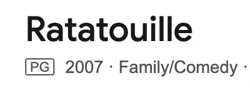

R18 Malfoid Artwork Archive
Below are all the works I can find predates Oct 2026, counting all the platforms, DM me @Topovn if I missed any, especially those predates September 23 2026
Before Malfoid became a thing, she appeared as genderbent Draco Malfoy in #drarry tag across platforms
Covers hand-drawn artwork posted on Twitter (X) only. NO AI arts, 18+ ver exists if you can find it. Art on Pixiv, Instagram and other sites isn't tracked since I'm too lazy to manually tag
This is not every art out there on Twitter nor I have every pieces of every artists on this site, DM me @Topovn if I missed your art or you found any AI/18+ arts that doesn't belong here
Or if you want your artwork to be removed please DM me too
I don't actively save R18 artworks on Twitter nor moderate the quality of these artworks
Hall of Fame
Malfoid Hall of Fame, most liked post on Twitter
Famous Works
Works with 20K to 50K likes, one per artist
Popular Works
Works with 10K to 20K likes, one per artist
Big Gems
Works with 5K to 10K likes, one per artist
Gems
Works with 2K to 5K likes, one per artist
Small Artists
Artists with under 2K followers, showing their best work
Buried Malfoid artworks
Works under 200 likes, one per artist
Recently Added Works
New works' like counts are not stable for likes filtering
My Personal Favorite
My (Topovn) personal favorite collection of Malfoid, will grow over time as I look back at the library
My ideas
@Ni7NiA7 I love your chibi Malfoids, can you draw her in this Adomination meme? With the flag being 🍏 or something too
@hallowleaf I have a great idea for Potter family and I would love to see it in your artstyle 🙏 Ratatouille came out in 2007, Lily should still be <10 years old. She would definitely watched this and would definitely nag her dad to sit on his shoulder, tugging his hair while he cooks

I'm currently doing a Malfoid doing Vocaloid daily challenge on my Twitter for 30+ days, if you are interested you can follow me to see what I draw next!
Archive Activity
| Week (Mon to Sun) | Works posted | Avg a day | Posts | Artists | New artists | Works saved |
|---|
Random
50 random artworks from 50 random artists, shuffle for a new set
No works match these filters.